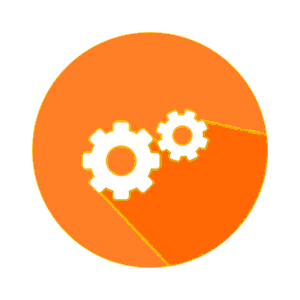

<ion-split-pane>
    <ion-menu [content]="content" persistent='true'>
        <ion-header>
            <ion-navbar color="toolbar">
                <ion-title>
                    
                </ion-title>
            </ion-navbar>
        </ion-header>
        <ion-content>
            <ion-list>

                <button ion-item menuClose (click)="openPage(perfilPage)" style="font-size: 25px" *ngIf="username">
                    Mi perfil
                </button>
                <hr>
                <button ion-item menuClose (click)="openPage(bienvenidaPage)" style="font-size: 25px" *ngIf="username">
                     Mis cursos
                </button>
                <hr>
                <button ion-item menuClose (click)="openPage(cursosPage)" style="font-size: 25px">
                     Más cursos
                </button>
                <hr>
                <button ion-item menuClose (click)="openPage(institucionesPage)" style="font-size: 25px">
                     Instituciones
                </button>
                <hr>
                <button ion-item menuClose (click)="volverAInicio()" style="font-size: 25px" *ngIf="!username">
                     Volver a inicio
                </button>
                <button ion-item menuClose (click)="volverAInicio()" style="font-size: 25px" *ngIf="username">
                     Cerrar sesión
                </button>
            </ion-list>
        </ion-content>
    </ion-menu>
    <ion-nav [root]="rootPage" [rootParams]="parametros" #content swipeBackEnabled="false" main></ion-nav>
</ion-split-pane>